2016年北京市中考数学试题 · 选择题 第6、7、8、9、10题 · 对应解析
6．（3分）（2016•北京）如果a+b=2，那么代数（a﹣
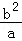
）•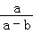
的值是（ ）A．2B．﹣2C．
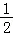
D．﹣【解答】解：∵a+b=2，
∴原式=
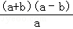
•=a+b=2故选：A．
7．（3分）（2016•北京）甲骨文是我国的一种古代文字，是汉字的早期形式，下列甲骨文中，不是轴对称的是（ ）
A．
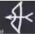
B．C．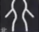
D．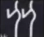
【解答】解：A、是轴对称图形，故本选项错误；
B、是轴对称图形，故本选项错误；
C、是轴对称图形，故本选项错误；
D、不是轴对称图形，故本选项正确．
故选D．
8．（3分）（2016•北京）在1﹣7月份，某种水果的每斤进价与出售价的信息如图所示，则出售该种水果每斤利润最大的月份是（ ）
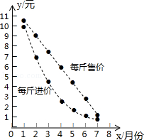
A．3月份B．4月份C．5月份D．6月份
【解答】解：由图象中的信息可知，3月份的利润=7.5﹣4.5=3元，
4月份的利润=6﹣2.4=3.6元，
5月份的利润=4.5﹣1.5=3元，
5月份的利润=2.5﹣1=1.5元，
故出售该种水果每斤利润最大的月份是4月份，
故选B．
9．（3分）（2016•北京）如图，直线m⊥n，在某平面直角坐标系中，x轴∥m，y轴∥n，点A的坐标为（﹣4，2），点B的坐标为（2，﹣4），则坐标原点为（ ）
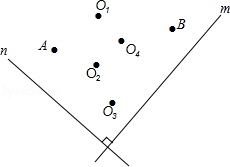
A．O1B．O2C．O3D．O4
【解答】解：设过A、B的直线解析式为y=kx+b
∵点A的坐标为（﹣4，2），点B的坐标为（2，﹣4）
∴
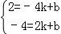
解得
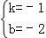
∴直线AB为y=﹣x﹣2
∴直线AB经过第二、三、四象限
如图，连接AB，则原点在AB的右上方
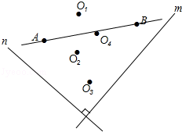
∴坐标原点为O1
故选（A）
10．（3分）（2016•北京）为了节约水资源，某市准备按照居民家庭年用水量实行阶梯水价．水价分档递增，计划使第一档、第二档和第三档的水价分别覆盖全市居民家庭的80%，15%和5%，为合理确定各档之间的界限，随机抽查了该市5万户居民家庭上一年的年用水量（单位：m3），绘制了统计图．如图所示，下面四个推断合理的是（ ）
①年用水量不超过180m3的该市居民家庭按第一档水价交费；
②年用水量超过240m3的该市居民家庭按第三档水价交费；
③该市居民家庭年用水量的中位数在150﹣180之间；
④该市居民家庭年用水量的平均数不超过180．
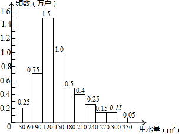
A．①③B．①④C．②③D．②④
【解答】解：①由条形统计图可得：年用水量不超过180m3的该市居民家庭一共有（0.25+0.75+1.5+1.0+0.5）=4（万），
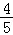
×100%=80%，故年用水量不超过180m3的该市居民家庭按第一档水价交费，正确；②∵年用水量超过240m3的该市居民家庭有（0.15+0.15+0.05）=0.35（万），
∴
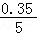
×100%=7%≠5%，故年用水量超过240m3的该市居民家庭按第三档水价交费，故此选项错误；③∵5万个数数据的中间是第25000和25001的平均数，
∴该市居民家庭年用水量的中位数在120﹣150之间，故此选项错误；
④由①得，该市居民家庭年用水量的平均数不超过180，正确，
故选：B．
二、填空题（本题共18分，每小题3分）